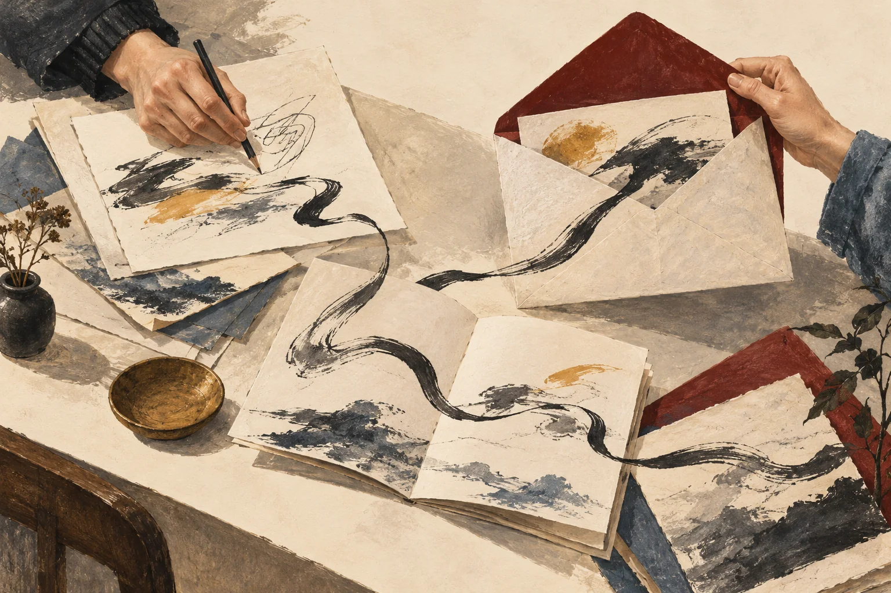
기획의 시작
먼저, 듣습니다.
주로 다루는 안경과 렌즈.
원장님이 고객에게 꼭 전하고 싶은 말.
회사 소개
안경원 전문 광고·마케팅 대행
고또마케팅
안경원에는 설명할 이야기가 많습니다. 안경을 만드는 과정, 렌즈를 고르는 이유, 고객에게 전하고 싶은 안내까지. 고또마케팅은 그 이야기를 정리하고, 각 채널에 맞는 콘텐츠로 만듭니다.
서비스 살펴보기함께 일하는 방식
안경원의 말에서 시작해
고객이 읽는 화면까지.

주로 다루는 안경과 렌즈.
원장님이 고객에게 꼭 전하고 싶은 말.

안경원의 전문성을 확인하고,
고객이 이해할 문장으로 정리합니다.
블로그의 한 편, 피드의 한 장.
전할 내용에 맞게 글과 이미지를 엮습니다.
맡기는 일과 함께 준비할 일을
명확하게 이야기하겠습니다.
고객과 나눈 대화
함께 만든 콘텐츠에 대해
고객이 직접 남겨주신 반응입니다.

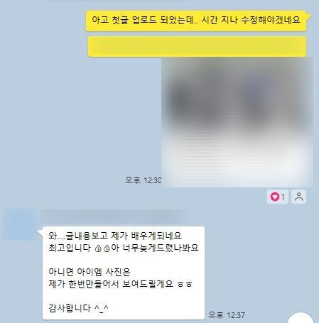
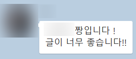

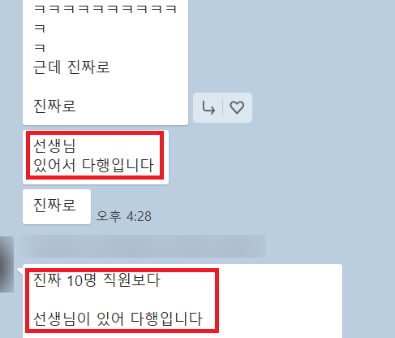


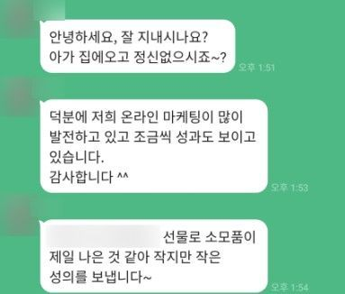
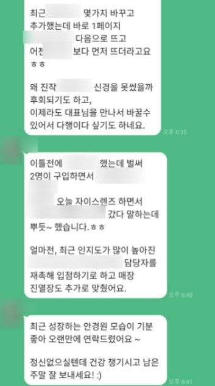

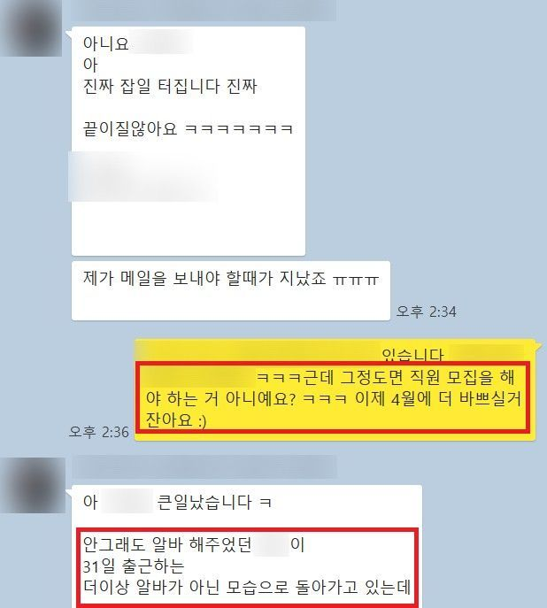
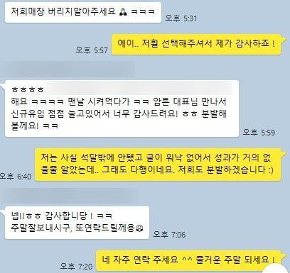

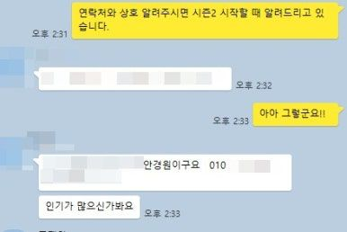
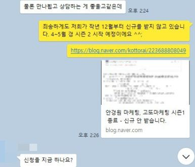
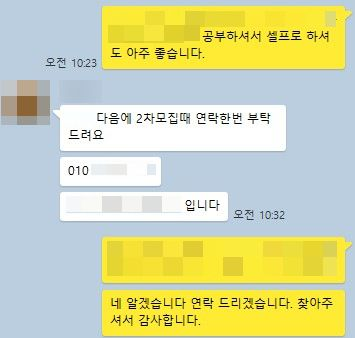
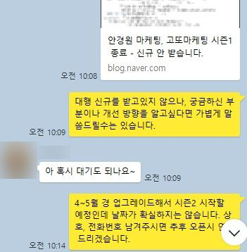
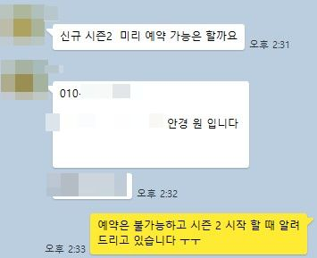

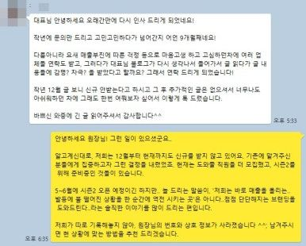

개별 고객의 경험이며,
모든 안경원에 같은 결과를 약속하지 않습니다.